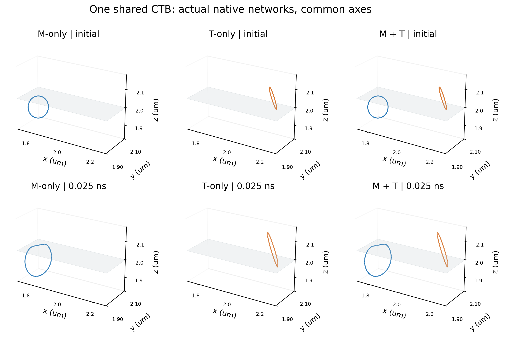
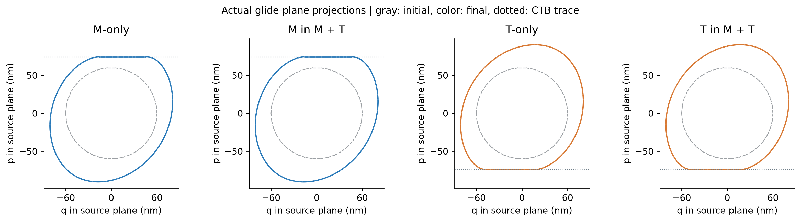
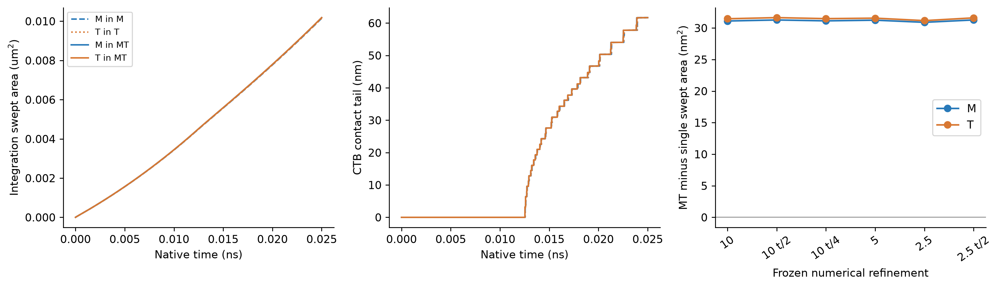
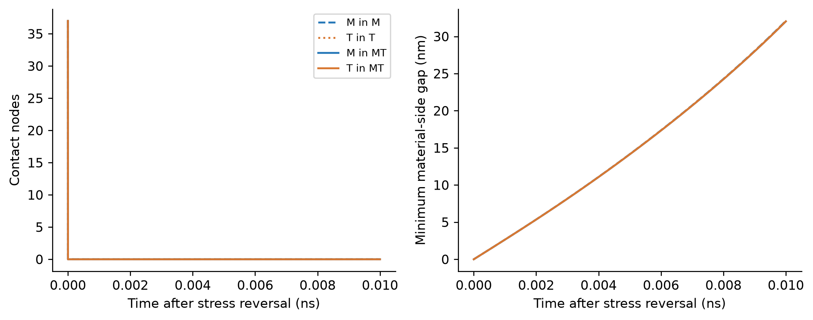

日期：2026-10-30；G1 科学裁决：UNRESOLVED（下述明确限定范围）。
已完成 M-only、T-only、M+T 的真实短时演化、反向释放、无CTB和原生操作消融。M/T共用一个真实ExaDiS弹性网络、同一宏观应力张量及同一个CTB0。不是两个独立通道动画。
在本例中，跨侧位错相互作用略微促进传播、使首次接触略提前；界面本身仍阻挡运动。未为了符合“共同活动必须更强阻碍”的预期改参数或绘图。这个结论不是四厚度强化、屈服或HDI结论。
材料为未标定有效FCC：b=0.255 nm、mu=54.6 GPa、nu=0.324，采用共同sigma_zz=1.1 GPa、相同GLIDE迁移率与各自正确旋转的滑移面。两源是普通闭合传播环，不称为Frank–Read源。取向保持共同[111]的60度Sigma3关系。
接触为固定、理想不可透射I0。一个共享几何面由M/T分别施加相反单侧法向约束；反力通过实际原生迁移率投影求得，保留合法界面切向速度，反向速度自动释放。不钉死节点、不把穿透后坐标裁回界面。CTB承受负的总接触反力；它没有独立结构演化或透射反应自由度。力为非周期无限介质N2直接力，计算盒不等于带自由表面修正的有限体；各向异性弹性、真实CTB结构力和透射反应均未加入。
材料身份从真实线段的Burgers、滑移法向及仿射源平面唯一继承；tag只作为原生地址，不作为材料身份。host_layer、origin_region、current_region、source/lineage及CTB/image字段均保存。当前支持每侧唯一可辨识的仿射单滑移源；无法辨识的反应、跨材料连接和孤立节点显式拒绝。不能把这种限定冒充完整多滑移系反应模型。
身份/能力拒绝几何回归7项通过，原生准入7项通过：接触/切向运动/释放/反力重构、真实分裂和粗化、地址复用、非法穿透及跨材料碰撞负控均有原始记录。原生重网格确实增加和减少节点，身份在实际输出上恢复。跨材料碰撞实际把76节点变成77节点，非法连接被拒绝。失败构型、合法恢复图和失败命令均保留。
每个原生积分、碰撞、TopologySerial及Remesh阶段结束后检查Burgers、来源和半空间合法性；Euler事件限制确保接受积分段不穿透。非法原生提议会结束该例，不会静默跳过操作后继续标PASS。恢复证据是网络图与时间状态复原，不是已获资格的累计塑性账本断点续算。原生tag在单个C++操作内部的完整生命周期未由绑定暴露，未冒称谱系事件精确恢复。
5→2.5 nm的MT接触尾段曾出现6.34%差异，原UNRESOLVED与首份审查保留。若本报告启用1.25 nm扩展，最后空间比较为2.5→1.25 nm；时间独立减半在2.5 nm验证，1.25 nm独立时间细化尚NOT_RUN。不能外推成所有网格/时间步的误差保证。
最后空间及时间细化比较中，主量最大相对差 6.33679%，首次接触时刻最大相对差 0.01044%。原2%/5%门槛保留；细小成对效应另用绝对误差，而非以2%总量容差代替。
| 材料侧 | 最细MT−单侧扫掠面积 (nm²) | 相对单侧 (%) | 观察到的空间+时间差 (nm²) | 因果判定 |
|---|---|---|---|---|
| M | 31.272130 | 0.308084 | 0.735538 | PASS |
| T | 31.602949 | 0.311343 | 0.852528 | PASS |
成对效应在最后层级保持符号且超过两倍观察到的细化差。扩展审查还将已测原点偏移差加入绝对差和，采用更保守的判别。这个差值准则是冻结的确定性分辨标准，不是严谨误差上界或随机种子置信区间。
全部已保存MT构型执行原生共同应力PK差分、跨侧力互反及“仅移除跨侧弹性力”的瞬时反事实检查；网络、位置、迁移率和接触不变。原生力与速度随之改变，支持差异来自跨侧弹性耦合。瞬时检查不冒充独立无耦合长时轨迹。
旧002版在末态出现约1.68e-6的跨侧力互反残差，超过冻结1e-8。原生直接段对复算、交换段对次序不能消除；仅把计算原点平移到网络附近后，残差降至约1e-11。新003版仅将输入原生力内核的图坐标和cell origin作统一平移，输出力回给原物理图。物理坐标、初始网络、CTB、载荷、材料与迁移率不变，没有投影或配平力。原生字段等价/原图不变等4项准入通过；完整26例在新版本重新计算，不混用旧轨迹。独立高精度解析参考仍NOT_RUN，因此不把这项修复冒称内核全域精度已证明。
| 消融人口/材料侧 | 有CTB面积 (nm²) | 无CTB面积 (nm²) | 面积降低 (%) | 最终界面尾段 (nm) |
|---|---|---|---|---|
| M/M | 10150.5130 | 11329.7994 | 10.4087 | 61.6914 |
| T/T | 10150.5130 | 11329.7994 | 10.4087 | 61.6914 |
| MT/M | 10181.7851 | 11370.0942 | 10.4512 | 61.6887 |
| MT/T | 10182.1159 | 11370.4495 | 10.4511 | 61.6906 |
无CTB及反向加载采用2.5 nm匹配参考，均为同网格真实对照；新增1.25 nm为空间细化见证。无CTB为移除约束而保留初始滑移流形的参考，不冒充真实CTB透射。反向加载从同一真实前向末态重启，原生节点、线段、Burgers和滑移面逐数组相同，没有重新生成或插入位错。
| 人口 | 各侧首次全部脱离时间 (ns) | 裁决 |
|---|---|---|
| M | {'M': 3.2465006096590015e-06} | PASS |
| T | {'T': 3.2465010608208725e-06} | PASS |
| MT | {'M': 3.246445758653988e-06, 'T': 3.246445758653988e-06} | PASS |
G0生产源码保持不变。重新运行A0（含固定节点与原生FR回归）、接触/三速度准入和四条HI/HII无壁/双壁原生轨迹；最终数组与历史输出比较。G0原冻结观测量/事件/守恒门禁通过，权威80例R5不覆盖。
单独新增的“完整力/速度相对差小于1e-10”辅助复现检查FAIL，失败原日志与strict_full_field_replay.json保留，未放宽该项阈值或改成PASS。首个无壁HI末态位置最大差1.96e-8 nm、速度最大差约2.73e-4 m/s，图拓扑相同；四条扫掠面积最大相对差约5.59e-14。没有独立定位原生浮点累计差异的完整来源，严格逐字段复现不获资格。它与按既有准则通过的G0科学回归分别裁决。
历史试算、非法阶段FAIL和资源CENSORED均保留。若有预算扩展，必须使用新case ID、从原始初态完整重跑，记录逻辑案例映射；不能把截断轨迹拼接成连续PASS。详见campaign_manifest、case_aliases（如有）、日志收据与原始result.json。
为减少细化中的Python开销，仅将材料归属的整数邻接归约向量化；与610个真实图、133747个节点观测逐项完全一致，7项原生正负控重跑通过。浮点几何谓词、力、迁移率、接触和接受步方程不变；每例源码快照保留不同实现。
4000 m/s限速会影响G0真实时序的既有发现没有被G1撤销。G1这里采用数学线性GLIDE无上限基准，不能宣称高速度材料运动律已标定。
- G1限定双侧单滑移/I0机制：UNRESOLVED。共享接触、身份继承、合法释放和阶段拓扑审查具有真实演化证据。
- VCoNi材料标定、模式相关CTB反应、任意多源/多滑移反应、周期层片、局域Nye/GND、真实强化及HDI：NOT_QUALIFIED或NOT_RUN。
- G1只含一个共享CTB，不能替代W3/G0的第二面界面增量验证，更不能回答四厚度趋势。
- 后续G2需要周期像与跨盒谱系、共享界面canonical ID、多界面事件限制和完整拒步账本；在这些门禁通过前不启动W6集体矩阵。
原生运行根：/home/sakura/opendis/w4_g1_20261030_003；审查目录：/home/sakura/opendis/w4_g1_20261030_003/analysis_r1。每例spec/config、命令、退出码、源码快照、初末构型、接受步三速度和dt、接触/身份事件、逐阶段面积张量与全局塑性均保留。
诊断图为真实数据：初末网络、全接受步传播/接触曲线、预定数值细化成对差及反向释放。不是论文F1–F10最终图，也没有用示意或插值代替DDD。



